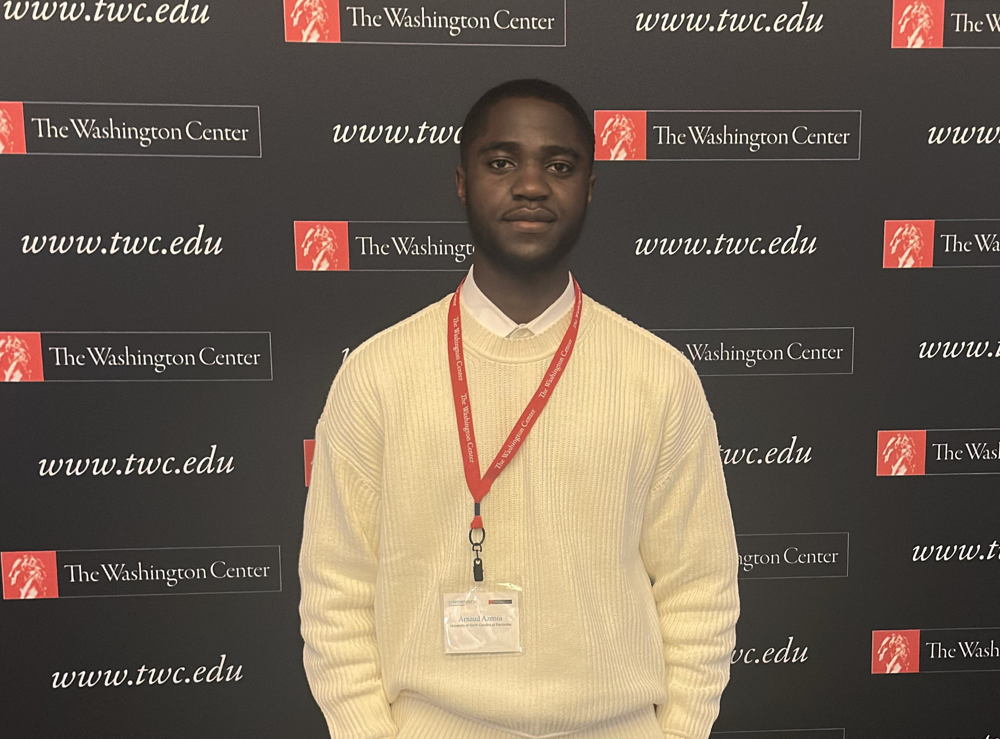

Unity 2‑D Game (C#)
A from‑scratch 2‑D game built in Unity with custom gameplay systems and polished feel. Focus on code architecture and UX.
Computer Science student (Cybersecurity concentration) at the University of North Carolina at Pembroke. I build useful, human‑centered software and love turning research insights into real products.

I’m a builder and a collaborator. My work spans frontend prototypes, data analysis, and systems that make classrooms, programs, and teams run smoother.
Wireframes, hi‑fi mockups, and design systems that scale. Comfortable in WordPress/Elementor and modern web stacks.
From building data collection systems to presenting insights that drive decisions and improve student success and retention.
Studying secure design patterns and fundamentals across Linux/Windows, networking, and cloud‑adjacent tooling.
After transferring from Abilene Christian University (4.0 GPA) to UNCP (current 3.96 GPA), I dove into research assistantships, UI/UX work, and program operations. I enjoy the overlap of people, product, and platform—where good systems and good design meet.
A compact snapshot of tools and languages I use most.
Selected work across coursework, research, and self‑initiated builds.
A from‑scratch 2‑D game built in Unity with custom gameplay systems and polished feel. Focus on code architecture and UX.
GUI calculator implementing five core operations with clean, maintainable code and input validation.
Analyzed historical academic data and built models that revealed factors influencing student retention and success.
Designed a Tableau dashboard to visualize sales performance, helping stakeholders track KPIs and trends in real‑time.
Developed data collection systems and documentation to streamline analysis for research supervisors.
Contributions to page building, style‑guide upkeep, and component libraries for a public‑facing education site.
Hands‑on roles where I shipped, supported, and learned.
Related coursework: Algorithms, Java Programming, Calculus, Object‑Oriented Programming, Algebra.
Related coursework: Computer Organization & Programming, Machine Learning, Artificial Intelligence.
“Arnaud demonstrates strong analytical skills and a knack for building tools people actually use.”
“Reliable, curious, and user‑focused. He elevates projects with thoughtful design and documentation.”
“A steady teammate who communicates clearly and ships on time.”
I’m open to internships, research, and product roles where design and engineering intersect.